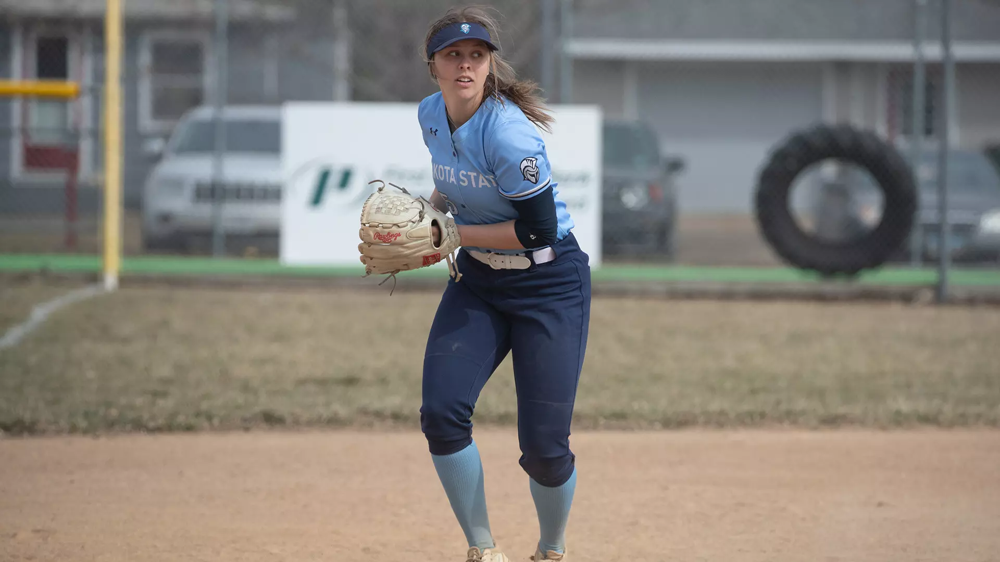

Meet Hannah Feser, she grew up in a small town in Saskatchewan Canada. She attended Cut Knife high school and worked hard to maintain good grades and becoming valedictorian of her graduating class. Now she attends Dakota State University in pursuit of her bachelor’s degree. She is majoring in Biology with a minor in Chemistry and has maintained a 3.89 average and has been on the dean’s list every semester during her time there. While she has been at Dakota State she has become the president of Tri Beta, a national biology society with a chapter at DSU. After graduating from DSU, Hannah plans to continue her education by going into a PharmD program and becoming a pharmacist. She is working as a summer student at a pharmacy to give some experience behind her belt. As well as her accomplishments in the classroom, she has had a few that led her to Dakota State University.
Hannah also played a lot of softball growing up, from the age of five she has had a ball in her hand. Softball has given her many opportunities in life, she was able to travel to Oklahoma with team Saskatchewan where she was awarded most valuable player for a couple games. As well as winning multiple provincials (equivalent of state) in her career, allowing her to move on to westerns, where her team won a bronze medal. It has also led to her being awarded female athlete of the year at her high school. Hannah had gone to Dakota State university with an athletic scholarship for softball where she has been playing third base for them. She currently has one more year of eligibility and hopes to end her softball career on a high note.